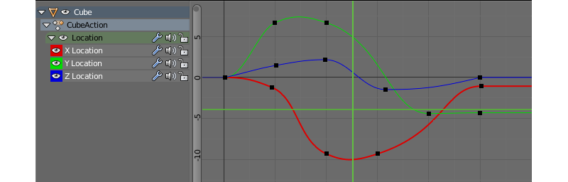
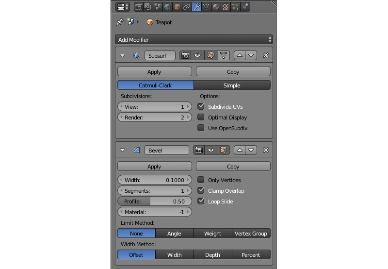
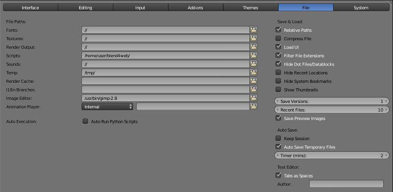
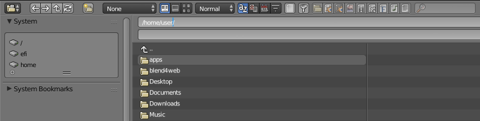

Blender User Interface¶
Table of Contents
Blender is a free open source 3D creation suite that supports an entire 3D pipeline from objects modeling to texturing, rigging and animating to rendering, compositing and even video editing. Blender can also be used to create interactive application, including web-based ones.
Blender is a cross-platform software that runs on Windows, Linux and macOS platforms equally well.
Blender interface consists of several windows. The number and types of windows present on the screen is not strictly defined and can be changed by a user manually or by selecting a preset from the Screen Layout menu at the top of the screen.
3D View¶

The main window of the program, showing a currently loaded 3D scene (through a camera or otherwise). 3D objects that compose any 3D scene are created, edited and animated in this window.
This window is open by default.
Timeline¶

This window (usually located an the bottom of the screen) shows various data that concern animation. This includes the current frame, the total number of frames (i.e. the length of the animation in the current scene) and keyframes for the selected object. The keyframes themselves are also created in this window.
This window is open by default.
Graph Editor¶
A tool for modifying various aspects of object animation using f-curves. Graph Editor can be used in Blend4Web same way it is used in Blender.
Dope Sheet¶

A tool for managing keyframes. Dope Sheet can be used in Blend4Web same way it is used in Blender.
NLA Editor¶

A tool for editing non-linear animations. Blend4Web engine supports NLAs; the user manual features a dedicated section on them.
UV/Image Editor¶

This tool can be used for editing both object UV maps and various 2D assets such as texture images.
UV maps are used in Blend4Web as well.
Video Sequence Editor¶

An interface for editing video sequences. This is a fully-fledged video editing system that can be used to trim video files, apply effects to them and combine them into one video. It is not used in Blend4Web engine.
Movie Clip Editor¶

A tool for editing movie clips. It is generally used for motion tracking and for masking movies. It is not used in Blend4Web engine.
Text Editor¶

A simple text editor is included in Blender. It supports word wrapping, syntax highlighting, line numbers, find and replace functions and some other features.
Text editor is not used in Blend4Web for editing project files, as Project Manager features its own built-in editor for editing project files. However, text files created in Text Editor (or imported to a .blend file using it) can be used as description sources for Meta Tags in Blend4Web.
Node Editor¶

An interface for creating node-base materials, textures and post-processing effect. Material nodes are supported in Blend4Web engine, while texture and compositing nodes are not. Blend4Web also features another type of nodes for creating scene logic.
Logic Editor¶

A tool for editing logic blocks used in Blender Game Engine.
Note
Blend4Web engine does not use Blender Logic Editor. Instead, it features a similar, but separate tool for editing scene logic: the node-based Logic Editor.
Properties¶

The second main window of the program. Contains various settings, some of which only concern currently selected object, and other apply to the whole of the scene.
This window is usually located at the right of the 3D View window.
The Properties window consists of several tabs. Each one of these tabs house a specific group of parameters. The tabs are:
Render¶

This tab contains options that concern rendering.
In Blend4Web mode, the Render tab features a slightly different set of options that are described here.
Render Layers¶

This tab can be used to separate the rendered image into several “layers” (such as diffuse colors, shadows, normal maps etc.) that can than be used for compositing in Blender or in other software. This tab is not used in Blend4Web engine.
Scene¶

Contains various parameters that concern 3D scene as a whole.
This tab is supported in Blend4Web, but has a different set of options that are described here in greater detail.
World¶

Settings that control the environment of the scene can be found in this tab. This includes such parameters as background colors, environment lighting, mist etc.
This tab is also used Blend4Web engine to set the environment. The settings themselves differ a bit from the ones in Blender. The differences are described here.
Object¶

This tab contains various object settings such as name, location, groups and so on. Object parameters are extensively used in Blend4Web engine and are described in a dedicated section of this manual.
Constraints¶

Constraints can be used to restrict object’s movement in various ways, or to set it along a certain path. Constraints are often utilized by 3D artists to simplify the process of creating complex animations and to make it more convenient. This tab contains tools for adding constraints to a selected object, setting them up or remove them, if necessary.
The Constraints tab can be used in Blend4Web. However, at the moment the engine does not support some of the object constraints available in Blender. See the dedicated section to learn how to use object constraints in Blend4Web.
Modifiers¶
This list contains all modifiers attached to the currently selected object. Modifiers can be added, configured and removed on this tab.
Modifiers are supported in Blend4Web engine, but by default are not applied to objects upon export. You can apply modifiers using Apply Modifiers or Apply Scale and Modifiers options.
Data¶

This tab contains information on object’s vertex groups and colors, UV maps, shape keys and other similar stuff. It is supported in Blend4Web and does not feature any additional options.
Material¶

The material (or multiple materials) of an object can be set here.
Blend4Web engine utilizes materials in mostly the same way Blender does. The differences are described in a dedicated chapter.
Texture¶

This tab is intended for setting up textures for materials and the environment alike.
The same tab is used to set up textures in Blend4Web. Working with textures is described in a dedicated chapter.
Particles¶

Here, particle systems are created and set up.
Particles are supported in Blend4Web engine as well and can be used to create fluids and object instances.
Physics¶

Physical settings of a selected object: a physical model associated with an object, its bounding volume and so on. Physic is utilized in Blend4Web engine and has an entire chapter dedicated to it.
Outliner¶

Contains so-called scene graph, a tree-like structure that organizes all data present in the .blend file.
By default, this window is located in the top right corner of the Blender window.
User Preferences¶
This window contains various Blender settings. These settings are separated into several categories each one of which occupies one tab located at the top of the window. The tabs are:


{kind=link}
{kind=link}
Input¶

User-interaction settings. Hot keys are set here, as are the way Blender reacts to mouse and keyboard events.
Add-ons¶

Various Blender add-ons are installed, configured and removed here. This includes Blend4Web add-on.
Themes¶

This tab allows the user to customize Blender interface and color scheme, both manually or by selecting one of the pre-existing interface themes.
File¶
{kind=link}
This tab is used to configure default file path for blend files, textures, rendered images and other files. Auto-save preferences are also set up here.
The Scripts field on this tab is used for installing Blend4Web engine. The process of installation is thoroughly described in the dedicated chapter.
{kind=link}
Info¶

The main menu bar with a list of error messages. This window is open by default and can be found at the top of the screen (right above the 3D View window).
Note
The list of errors is folded by default.
Tip
You can expand it by dragging the border of the Info window down.
File Browser¶
{kind=link}
This is a built-in file manager that can be used for various file-related operations, mostly opening/saving .blend files and importing/exporting scenes and assets.
Python Console¶

This is a tool intended for an experienced user. The Python Console offers a quick way to execute commands, complete with auto-complete feature, a command history and full access to the entire Python API.